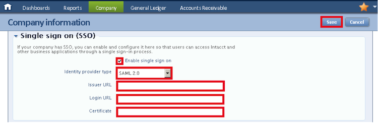

Sign in to your Intacct Admin console and then select Company > Company Info > Security > Single sign on (SSO) section. The screen below opens.

Sign into the Okta Admin Dashboard to generate this variable.
Select Save.
Set up any Intacct users who sign in using SSO. Any users who are not set up for SSO can continue to sign into Intacct using the basic login screen. However, once user are set up for SSO, they must to use the SSO login.
To set up individual Intacct users for SSO, edit their user records. To do this, navigate to Company > Users > Edit. In the Federated SSO user id field, and enter the User ID that is the same value shown on the User Information tab.
Note: Intacct supports both IDP-initiated and SP-initiated flow. Just In Time (JIT) provisioning is not supported.
For SP-initiated flow, use the URL https://www.intacct.com/ia/acct/login.phtml and select Use single sign-on.